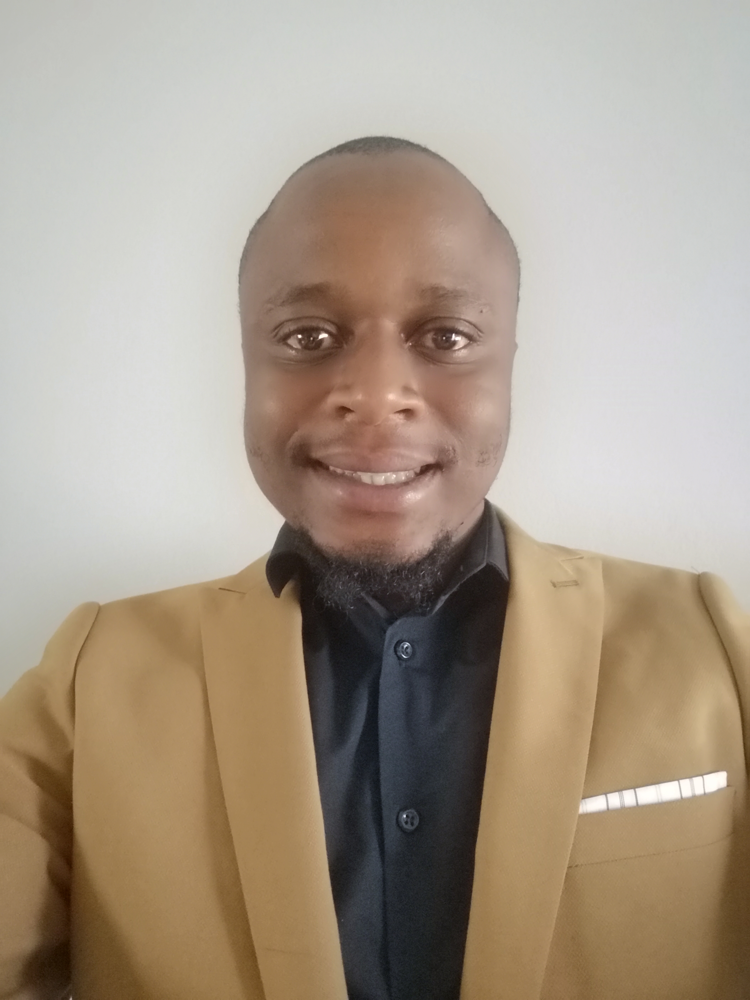

CV
Contact Details:
Name:
Ogodiseng Sehoole
Contact Number:
082 776 4622
Email Address:
gsehoole1@gmail.com
LinkedInBio:
I'm a result driven individual who is qualified as an Industrial Engineer and who is currently persuing a qualification in Software Engineering and Web Desgin. Including my inservice training I have 3 years experience in the feild of Industrial Engineer. I'm an analytical person who enjoys problem solving in this regard. I have a passion for technology, learning new skills and growing as a person overall. I am motivated by hopes of earning a better life thereby becoming an asset to those around me. What I would most like to do is to become a proficient Software Engineer and Web Designer so I can apply my knowledge and skills to benefit me.
Skills and Competencies:
- Project Management
- Operational Analysis
- Technical Plan Execution
- Resource Management
- Report Management
- Process Audits
- Quality Control
- Stakeholder Engagement
- Strategic Planning
- Performance Optimisation
- Informed Decision- making
- Negotiation
- Problem Identification and Resolution

Education:
BTech Engineering: Industrial Tshwane University of Technology - 2019
National Diploma Engineering: Industrial Tshwane University of Technology - 2018
Higher Certificate : Software Engineering & Web development HyperionDev - 2022
Experience:
Industrial Engineer | Marcom Plastics Rosslyn Sep 2018- Oct 2020
- Performed material and label trials and mould validations
- Reinforced quality control and provide consultancy on new designs, changes and developments
- Managed and oversaw project deliverables and ensured compliance to codes, standards, regulations, equipment- specific specifications and organisational requirements
- Performed cost analysis, supporting senior decision on strategic alignment of operating resources to maximise key growth areas
- Drove process and technical design changes to improve performance and efficiency
- Managed the inspection of products and analysis of operational data against customer specifications
- Determined and compile estimates for technical and material requirements for project development
- Supported and led strategic projects to bring new manufacturing capabilities into facility through new equipment or modernization of existing equipment
- Designed documents that are now used for processes such as material and label trials and mould validation, ascertaining which important factors were necessary to be recorded for those procedures and making them recordable on the respective documents.
- Identified, validated, and executed opportunities for process improvements
- Reinforced process audits to ensure compliance to processes and that any discrepancies are resolved efficiently
- Designed Standard Operating Procedures (SOPs) and trained relevant parties on newly- introduced procedures
- Initiated project to increase predictive maintenance done at the plant. Acquired all critical parts and when each individual system needs to be changed. Designed a catalogue with process instructions to be used across the department.
- Spearheaded a project in which the main focus was to cut down the time between mould changeovers.
- Communicated decisions, changes, enhancements, and modifications to colleagues, clients and other stakeholders, so that issues and solutions are understood and risk is averted
- Elicited, analysed, specified, and validated the needs of project stakeholders
- Drove profitable thinking by providing high quality, timely and accurate recommendations to stakeholders and senior management
- In- service Training | BMW South Africa Rosslyn | Jul 2017 - Jul 2018